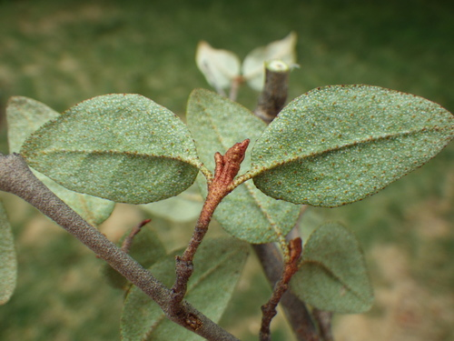
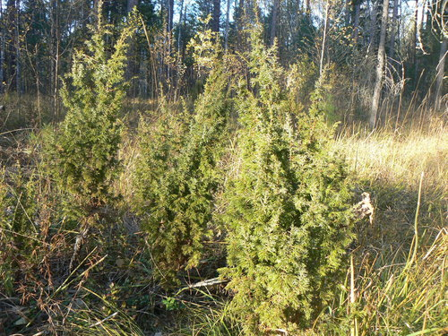
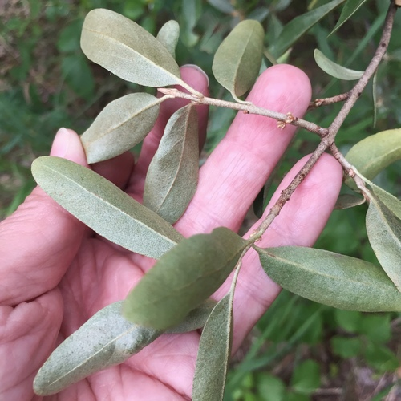

Native shrubs of Alberta and Saskatchewan
The growth form, which is the first thing that decides where a plant can go.
54 plants
Alder-leaved BuckthornEndotropis alnifolia naturalist charlie, some rights reserved (CC BY), uploaded by naturalist charlie") Basket WillowSalix petiolaris
Basket WillowSalix petiolaris Beaked HazelnutCorylus cornuta
Beaked HazelnutCorylus cornuta Matt Lavin, some rights reserved (CC BY)") Big SagebrushArtemisia tridentata
Big SagebrushArtemisia tridentata Eugene Popov, some rights reserved (CC BY), uploaded by Eugene Popov") Birch-leaved SpireaSpiraea betulifoliaBlack HawthornCrataegus douglasii
Birch-leaved SpireaSpiraea betulifoliaBlack HawthornCrataegus douglasii Andrey Zharkikh, some rights reserved (CC BY)") Bog BlueberryVaccinium uliginosum
Bog BlueberryVaccinium uliginosum Laura Gaudette, some rights reserved (CC BY), uploaded by Laura Gaudette") Bracted HoneysuckleLonicera involucrata
Bracted HoneysuckleLonicera involucrata Brian Finzel, some rights reserved (CC BY-SA), uploaded by Brian Finzel") Bristly Black CurrantRibes lacustre
Bristly Black CurrantRibes lacustre W. Terry Hunefeld, some rights reserved (CC BY), uploaded by W. Terry Hunefeld") BroomweedGutierrezia sarothrae
BroomweedGutierrezia sarothrae Douglas Goldman, some rights reserved (CC BY-SA), uploaded by Douglas Goldman") ChokecherryPrunus virginiana
ChokecherryPrunus virginiana tomasz przechlewski, some rights reserved (CC BY)") Common SnowberrySymphoricarpos albusCreeping Oregon GrapeMahonia repens
Common SnowberrySymphoricarpos albusCreeping Oregon GrapeMahonia repens Caleb Catto, some rights reserved (CC BY), uploaded by Caleb Catto") Douglas MapleAcer glabrum
Douglas MapleAcer glabrum Dustin Snider, some rights reserved (CC BY), uploaded by Dustin Snider") Dwarf BirchBetula glandulosa
Dwarf BirchBetula glandulosa Peter Stevens, some rights reserved (CC BY)") False Box (Mountain Boxwood)Paxistima myrsinites
False Box (Mountain Boxwood)Paxistima myrsinites Catherine C. Galley, some rights reserved (CC BY), uploaded by Catherine C. Galley") Fragrant SumacRhus aromatica
Fragrant SumacRhus aromatica peganum, some rights reserved (CC BY-SA)") Golden Currant (Buffalo Currant)Ribes aureumGreen AlderAlnus alnobetula
Golden Currant (Buffalo Currant)Ribes aureumGreen AlderAlnus alnobetula Tom Norton, some rights reserved (CC BY), uploaded by Tom Norton") Highbush CranberryViburnum opulusLabrador TeaLedum groenlandicum
Highbush CranberryViburnum opulusLabrador TeaLedum groenlandicum
Benjamin Zwittnig, some rights reserved (CC BY)") Low BilberryVaccinium myrtillus
Low BilberryVaccinium myrtillus psweet, some rights reserved (CC BY-SA), uploaded by psweet") Low-bush CranberryViburnum edule
Low-bush CranberryViburnum edule Sarah Johnson, some rights reserved (CC BY), uploaded by Sarah Johnson") MeadowsweetSpiraea alba
MeadowsweetSpiraea alba Stan Shebs, some rights reserved (CC BY-SA)") Narrow-leaf WillowSalix exiguaNorthern Black CurrantRibes hudsonianumPink Spirea (Rose Meadowsweet)Spiraea alba var. latifolia
Narrow-leaf WillowSalix exiguaNorthern Black CurrantRibes hudsonianumPink Spirea (Rose Meadowsweet)Spiraea alba var. latifolia Joshua Mayer, some rights reserved (CC BY-SA)") Prairie RoseRosa arkansana
Prairie RoseRosa arkansana Tom Norton, some rights reserved (CC BY), uploaded by Tom Norton") Prickly Wild RoseRosa acicularis
Prickly Wild RoseRosa acicularis bobkennedy, some rights reserved (CC BY-SA), uploaded by bobkennedy") Pussy WillowSalix discolor
Pussy WillowSalix discolor Matt Lavin, some rights reserved (CC BY-SA)") RabbitbrushEricameria nauseosa
RabbitbrushEricameria nauseosa giantcicada, some rights reserved (CC BY), uploaded by giantcicada") Red Osier DogwoodCornus sericea
Red Osier DogwoodCornus sericea Harvey Barrison, some rights reserved (CC BY-SA)") Sandbar WillowSalix interior
Sandbar WillowSalix interior Sam Kieschnick, some rights reserved (CC BY), uploaded by Sam Kieschnick") Saskatoon BerryAmelanchier alnifoliaShort-capsuled WillowSalix brachycarpaShrubby CinquefoilDasiphora fruticosa
Saskatoon BerryAmelanchier alnifoliaShort-capsuled WillowSalix brachycarpaShrubby CinquefoilDasiphora fruticosa Matt Lavin, some rights reserved (CC BY-SA)") Silver SagebrushArtemisia cana
Silver SagebrushArtemisia cana Ryan Hodnett, some rights reserved (CC BY-SA)") SilverberryElaeagnus commutataSkunk CurrantRibes glandulosum
SilverberryElaeagnus commutataSkunk CurrantRibes glandulosum Douglas Goldman, some rights reserved (CC BY-SA), uploaded by Douglas Goldman") Soapweed YuccaYucca glauca
Soapweed YuccaYucca glauca Gavin Slater, some rights reserved (CC BY), uploaded by Gavin Slater") ThimbleberryRubus parviflorus
ThimbleberryRubus parviflorus Hladac, some rights reserved (CC BY-SA)") Thinleaf AlderAlnus incana
Thinleaf AlderAlnus incana naturalist charlie, some rights reserved (CC BY), uploaded by naturalist charlie") Velvet-leaf BlueberryVaccinium myrtilloides
Velvet-leaf BlueberryVaccinium myrtilloides Western Mountain AshSorbus scopulina
Western Mountain AshSorbus scopulina Mary Krieger, some rights reserved (CC BY), uploaded by Mary Krieger") Western SnowberrySymphoricarpos occidentalisWild Black CurrantRibes americanumWild GooseberryRibes oxyacanthoides
Western SnowberrySymphoricarpos occidentalisWild Black CurrantRibes americanumWild GooseberryRibes oxyacanthoides Ole Husby, some rights reserved (CC BY-SA)") Wild RaspberryRubus idaeus
Wild RaspberryRubus idaeus Jenn (McPhee) Dyson, some rights reserved (CC BY), uploaded by Jenn (McPhee) Dyson") Wild Red CurrantRibes triste
Wild Red CurrantRibes triste WinterfatKrascheninnikovia lanata
WinterfatKrascheninnikovia lanata Don Loarie, some rights reserved (CC BY), uploaded by Don Loarie") Woods' RoseRosa woodsii
Woods' RoseRosa woodsii
Basket WillowSalix petiolarisBeaked HazelnutCorylus cornutaBig SagebrushArtemisia tridentataBirch-leaved SpireaSpiraea betulifoliaBlack HawthornCrataegus douglasiiBog BlueberryVaccinium uliginosumBracted HoneysuckleLonicera involucrataBristly Black CurrantRibes lacustreBroomweedGutierrezia sarothrae
Canada BuffaloberryShepherdia canadensisChokecherryPrunus virginiana
Common JuniperJuniperus communisCommon SnowberrySymphoricarpos albusCreeping Oregon GrapeMahonia repensDouglas MapleAcer glabrumDwarf BirchBetula glandulosaFalse Box (Mountain Boxwood)Paxistima myrsinitesFragrant SumacRhus aromaticaGolden Currant (Buffalo Currant)Ribes aureumGreen AlderAlnus alnobetulaHighbush CranberryViburnum opulusLabrador TeaLedum groenlandicumLow BilberryVaccinium myrtillusLow-bush CranberryViburnum eduleMeadowsweetSpiraea albaNarrow-leaf WillowSalix exiguaNorthern Black CurrantRibes hudsonianumPink Spirea (Rose Meadowsweet)Spiraea alba var. latifoliaPrairie RoseRosa arkansanaPrickly Wild RoseRosa acicularisPussy WillowSalix discolorRabbitbrushEricameria nauseosaRed Osier DogwoodCornus sericeaSandbar WillowSalix interiorSaskatoon BerryAmelanchier alnifoliaShort-capsuled WillowSalix brachycarpaShrubby CinquefoilDasiphora fruticosa
Silver BuffaloberryShepherdia argenteaSilver SagebrushArtemisia canaSilverberryElaeagnus commutataSkunk CurrantRibes glandulosumSoapweed YuccaYucca glaucaThimbleberryRubus parviflorusThinleaf AlderAlnus incanaVelvet-leaf BlueberryVaccinium myrtilloidesWestern Mountain AshSorbus scopulinaWestern SnowberrySymphoricarpos occidentalisWild Black CurrantRibes americanumWild GooseberryRibes oxyacanthoidesWild RaspberryRubus idaeusWild Red CurrantRibes tristeWinterfatKrascheninnikovia lanataWoods' RoseRosa woodsii